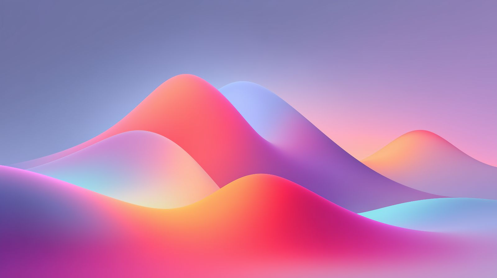

DESIGN SYSTEM
SHOWCASE
A living library of the exact Miles interface patterns, typography, surfaces, motion, and components used across the original experience.
A living library of the exact Miles interface patterns, typography, surfaces, motion, and components used across the original experience.
Hierarchy, scale, and rhythm using only styles present in the reference.
Heading 1
48px / 48px
Heading 2
36px / 40px
Heading 3
24px / 32px
Heading 4
18px / 28px
Bold L
Bold Large
20px / 28px
Bold M
Bold Medium
14px / 20px
Bold S
Bold Small
12px / 16px
Paragraph
Larger body copy for intros, product narrative, and long-form section context.
18px / 28px
Regular L
Regular Large body
18px / 28px
Regular M
Regular Medium body
14px / 20px
Regular S
Regular Small label
10px / 16px
Core backgrounds, overlays, borders, and gradients used in the source layout.
Page
`bg-white`
Dark Section
`bg-[#0A262D]`
Soft Section
`bg-[#EAF4F4]`
Glass / Blur
`bg-[#0F2A31]/80` + `backdrop-blur-md`

Overlay
Hero Gradient

Overlay
Card Fade

Overlay
Location Fade
Buttons, cards, links, and icon controls exactly as implemented in the reference.
Button States
Default
Hover
Active
Focus
Disabled

Icon Controls
No input fields are present in the original design; component inventory is button, link, card, media, and icon controls.
Canonical containers, section paddings, and responsive composition patterns.
Container
`max-w-4xl` + `mx-auto`
Section Padding
`py-24 px-6 md:px-12`
Wide Container
`max-w-[1600px] mx-auto`
Pattern 1: Mosaic Grid


Pattern 2: Two-Column Split

Image + copy alignment with consistent gap and responsive stacking.
Animation and transition behaviors from the source implementation.
`animate-bounce`

Scale 110

`transition-all`
Play Control
Color Transitions
Lucide icon system from the original build, with inherited color and size variants.